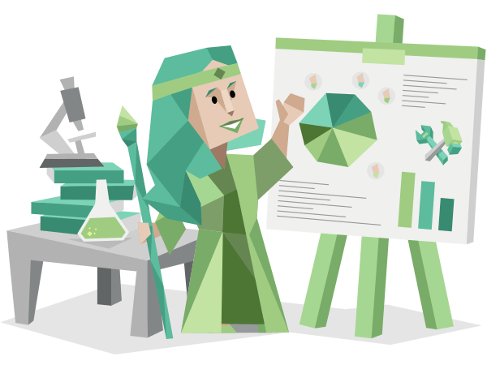
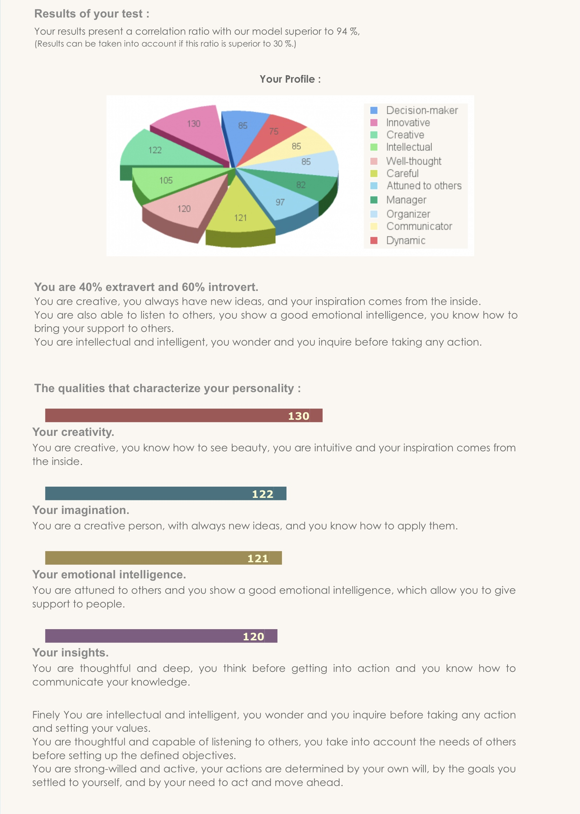

Personality Profile
Myers-Briggs
Advocate
According to Myers-Briggs I fall into the Advocate personality type. (2021, 16 Personalities) Interestingly after reading the profile I see why they have classed me as such. I would call myself a team player, not thinking myself more important that any other within the group and therefore I feel I act as a peace keeper in situations where conflict may occur. I enjoy working in teams where cooperation and independence are equally valuable. I think my personality type will work well when forming a team with others. I know one of my biggest weakness is my sensitivity to criticism and my perfectionism which often does lead to burnout because I will always try to go the extra mile. This may not mesh well with the values of my team members and will be aspects of myself I will have to work with.
Strengths
- Creative
- Insightful
- Principled
- Passionate
- Altruistic
Weaknesses
- Sensitive to Criticism
- Reluctant to Open Up
- Perfectionistic
- Avoiding the Ordinary
- Prone to Burnout
My learning Style according to Education Planner:
Auditory/Tactile learner (2021, Education Planner)
As an auditory and tactile learner I lean by hearing and then doing. This works well for me in class situations when I write notes while listening to lectures and then taking time to do the task myself, however I do need to take regular breaks while I study. As a member of a team I feel that listening to the ideas and needs of others and implementing them will lead to the best outcomes for all.
Testcolor
Extroverted, Introvert (2021, Testcolor)
My personality qualities according to Testcolor indicate that I am creative, imaginative, attuned to the emotions and needs of others and that I communicate my knowledge well to others. I think these attributes work well for me when working as a member of a team. My results also indicate that I set myself goals and that I action plans to achieve them. I hope these attributes of my personality will blend well with my group to reach our combined academic goals.
